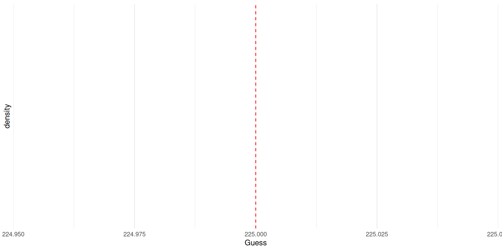
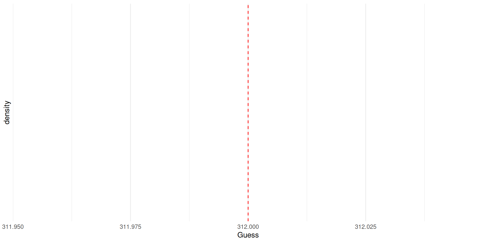
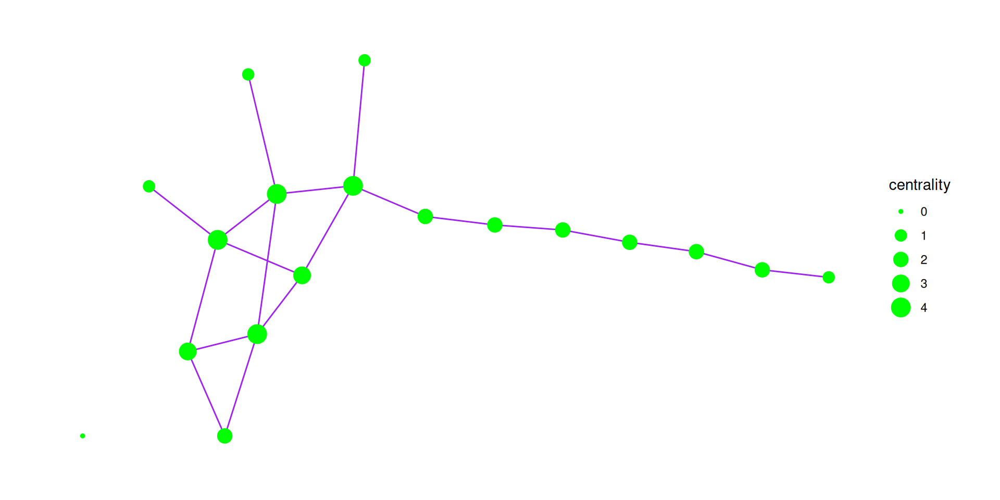

When I was young, we were really poor. My family could only afford a second-hand calculator, which was missing the “X” button.
Times were hard.
- Exam next week
- One page of notes, front and back (printed)
- Short response + multiple choice
- Making networks without grids
set_graph_style(family='sans')ortheme_graph()
- Timing for final project
- Don’t wait - get started now!
- Reach out if you get stuck
- Look at example projects from the past
- Not all visualizations have to be networks
- Concepts + Visualizations
- Idea that groups can be smarter than the smartest person in the group
- Sometimes it’s simple; e.g, aggregating information from multiple sources
- Sometimes there is an emergent property, where the group thinks and behaves differently
- While organizations are much more hierarchical than ants, they can still have emergent properties
- Partially a function of history, partially of the structure of the organization
- Even a culture everyone dislikes can be hard to change
- E.g., metric system, QWERTY keyboards
- High-level decisions about zoning, infrastructure, etc. but the character of a city is emergent
- Jane Jacobs: “The Death and Life of Great American Cities”
- Get out a piece of paper
- Guess how many pages are in this book and record your guess on the Google Form
- Tell your guess (and no other information) to the two people on either side of you
- Guess again how many pages are in the book and record it
- Guess 3: Guess the pages in this book
- Two random people will tell us their guess
- Guess 4: Guess the pages again for this book
- Wisdom of crowds is idea that in many contexts, the average is a really good guess!
- What is groupthink? Have you seen examples? How might this relate?
- Dr. Josh Becker et al. show that in some cases, communication can help
- Those whose guesses are worst move the most
- Divorced from other social relationships (not multiplex)


- How does this relate to our week on small group networks?
- Transactive memory
- Hierarchy
- Centralization
- Diffusion and contagion
- How could you design a group / network to get the benefits of the wisdom of crowds?
- When would you expect a wisdom of crowds approach to work well?
- When would you expect it to fail?
- How are shared understanding and groupthink different? Shared understanding is framed positively and groupthink is framed negatively. Is there a difference, or are they just framed differently?
- Can a group ever be more intelligent than its smartest member?
- If decentralized networks improve accuracy, why do so many real-world systems (like social media, big companies, etc.) become highly centralized?
- The experiments used examples with clear correct answers. How would the results change in situations where there is no “truth” (like political opinions, religious beliefs, etc.)?
- In what situations, if any, is it better for a group to have a centrally influential leader rather than a more decentralized structure?
- Do online groups show the same patterns of collective intelligence as in-person groups?
- If you have high self-weight what are some ways you can notice this and balance it out so that you are not just stubborn and can grow? When are good times to have high self-weight and when are good times to have low self-weight?
- Do you typically go to a select few people for advice and put lots of weight into what they say or take the wisdom of crowds approach go to many people and average out what feedback you get not really put much weight into the opinion of one other person?
- Visualization / ggraph
- Look at code and explain what it will look like
- Find the bug in code

What would this code do?
- Centrality
- Network representations (Edgelists and matrices)
- Network formation
- Homophily, focus theory, transitivity, social exchange theory, etc.
- Tie strength and small worlds
- Power and social capital
- Contagion and diffusion
- Centrality
- Bipartite networks and projections
- Random rewirings
- Friendship paradox
- Strength of weak ties
- Wisdom of crowds / collective intelligence